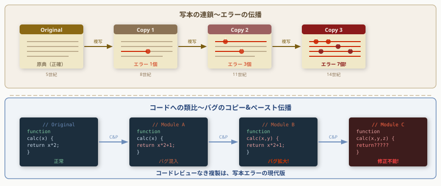

写字室の知恵からコードレビューと知識継承の本質を学ぶ
写字→校訂→装飾の分業がGitフローの原型
<!-- Stage 1 --> <rect x="50" y="60" width="100" height="55" rx="8" fill="#16213e" stroke="#f9a825" stroke-width="1.5"/> <text x="100" y="82" text-anchor="middle" fill="#f9a825" font-size="11" font-family="sans-serif">原本選定</text> <text x="100" y="99" text-anchor="middle" fill="#aaaaaa" font-size="9" font-family="sans-serif">中世</text> <rect x="50" y="145" width="100" height="55" rx="8" fill="#16213e" stroke="#f9a825" stroke-width="1.5"/> <text x="100" y="167" text-anchor="middle" fill="#f9a825" font-size="11" font-family="sans-serif">要件定義</text> <text x="100" y="184" text-anchor="middle" fill="#aaaaaa" font-size="9" font-family="sans-serif">現代</text> <polygon points="162,87 154,80 154,94" fill="#f9a825" opacity="0.7"/> <polygon points="162,172 154,165 154,179" fill="#f9a825" opacity="0.7"/> <!-- Stage 2 --> <rect x="170" y="60" width="100" height="55" rx="8" fill="#16213e" stroke="#f9a825" stroke-width="1.5"/> <text x="220" y="82" text-anchor="middle" fill="#f9a825" font-size="11" font-family="sans-serif">書写</text> <text x="220" y="99" text-anchor="middle" fill="#aaaaaa" font-size="9" font-family="sans-serif">中世</text> <rect x="170" y="145" width="100" height="55" rx="8" fill="#16213e" stroke="#f9a825" stroke-width="1.5"/> <text x="220" y="167" text-anchor="middle" fill="#f9a825" font-size="11" font-family="sans-serif">実装</text> <text x="220" y="184" text-anchor="middle" fill="#aaaaaa" font-size="9" font-family="sans-serif">現代</text> <polygon points="282,87 274,80 274,94" fill="#f9a825" opacity="0.7"/> <polygon points="282,172 274,165 274,179" fill="#f9a825" opacity="0.7"/> <!-- Stage 3 --> <rect x="290" y="60" width="100" height="55" rx="8" fill="#16213e" stroke="#e91e63" stroke-width="1.5"/> <text x="340" y="82" text-anchor="middle" fill="#e91e63" font-size="11" font-family="sans-serif">校合</text> <text x="340" y="99" text-anchor="middle" fill="#aaaaaa" font-size="9" font-family="sans-serif">中世</text> <rect x="290" y="145" width="100" height="55" rx="8" fill="#16213e" stroke="#e91e63" stroke-width="1.5"/> <text x="340" y="167" text-anchor="middle" fill="#e91e63" font-size="11" font-family="sans-serif">コードレビュー</text> <text x="340" y="184" text-anchor="middle" fill="#aaaaaa" font-size="9" font-family="sans-serif">現代</text> <polygon points="402,87 394,80 394,94" fill="#e91e63" opacity="0.7"/> <polygon points="402,172 394,165 394,179" fill="#e91e63" opacity="0.7"/> <!-- Stage 4 --> <rect x="410" y="60" width="100" height="55" rx="8" fill="#16213e" stroke="#e91e63" stroke-width="1.5"/> <text x="460" y="82" text-anchor="middle" fill="#e91e63" font-size="11" font-family="sans-serif">修正</text> <text x="460" y="99" text-anchor="middle" fill="#aaaaaa" font-size="9" font-family="sans-serif">中世</text> <rect x="410" y="145" width="100" height="55" rx="8" fill="#16213e" stroke="#e91e63" stroke-width="1.5"/> <text x="460" y="167" text-anchor="middle" fill="#e91e63" font-size="11" font-family="sans-serif">バグ修正</text> <text x="460" y="184" text-anchor="middle" fill="#aaaaaa" font-size="9" font-family="sans-serif">現代</text> <polygon points="522,87 514,80 514,94" fill="#e91e63" opacity="0.7"/> <polygon points="522,172 514,165 514,179" fill="#e91e63" opacity="0.7"/> <!-- Stage 5 --> <rect x="530" y="60" width="100" height="55" rx="8" fill="#16213e" stroke="#f9a825" stroke-width="1.5"/> <text x="580" y="82" text-anchor="middle" fill="#f9a825" font-size="11" font-family="sans-serif">装飾</text> <text x="580" y="99" text-anchor="middle" fill="#aaaaaa" font-size="9" font-family="sans-serif">中世</text> <rect x="530" y="145" width="100" height="55" rx="8" fill="#16213e" stroke="#f9a825" stroke-width="1.5"/> <text x="580" y="167" text-anchor="middle" fill="#f9a825" font-size="11" font-family="sans-serif">ドキュメント</text> <text x="580" y="184" text-anchor="middle" fill="#aaaaaa" font-size="9" font-family="sans-serif">現代</text> <polygon points="642,87 634,80 634,94" fill="#f9a825" opacity="0.7"/> <polygon points="642,172 634,165 634,179" fill="#f9a825" opacity="0.7"/> <!-- Stage 6 --> <rect x="650" y="60" width="100" height="55" rx="8" fill="#16213e" stroke="#f9a825" stroke-width="1.5"/> <text x="700" y="82" text-anchor="middle" fill="#f9a825" font-size="11" font-family="sans-serif">製本</text> <text x="700" y="99" text-anchor="middle" fill="#aaaaaa" font-size="9" font-family="sans-serif">中世</text> <rect x="650" y="145" width="100" height="55" rx="8" fill="#16213e" stroke="#f9a825" stroke-width="1.5"/> <text x="700" y="167" text-anchor="middle" fill="#f9a825" font-size="11" font-family="sans-serif">リリース</text> <text x="700" y="184" text-anchor="middle" fill="#aaaaaa" font-size="9" font-family="sans-serif">現代</text>
段階的レビューが誤り伝播を防いだ先人の知恵
写字師の校訂プロセスがコードレビューの原型になっている

異本比較で誤りを特定—変更差分がバグの証跡になる
校訂の体系化がデバッグトレースの先祖
多段階レビューと承認フローが品質を保証した構造
写本師の原則—レビューは欠陥発見でなく品質向上
小さな変更を頻繁にレビューすることで誤り伝播を止める
<rect x="30" y="55" width="360" height="145" rx="10" fill="#16213e" stroke="#f9a825" stroke-width="2"/> <text x="210" y="85" text-anchor="middle" fill="#f9a825" font-size="12" font-weight="bold" font-family="sans-serif">校合は書写と同じくらい重要</text> <line x1="50" y1="97" x2="370" y2="97" stroke="#333355" stroke-width="1"/> <text x="210" y="120" text-anchor="middle" fill="#aaaaaa" font-size="10" font-family="sans-serif">写本文化の実践</text> <text x="210" y="150" text-anchor="middle" fill="#ffffff" font-size="11" font-family="sans-serif">→ レビューに十分な時間を割く文化</text> <rect x="410" y="55" width="360" height="145" rx="10" fill="#16213e" stroke="#f9a825" stroke-width="2"/> <text x="590" y="85" text-anchor="middle" fill="#f9a825" font-size="12" font-weight="bold" font-family="sans-serif">専門的な校合者が存在した</text> <line x1="430" y1="97" x2="750" y2="97" stroke="#333355" stroke-width="1"/> <text x="590" y="120" text-anchor="middle" fill="#aaaaaa" font-size="10" font-family="sans-serif">写本文化の実践</text> <text x="590" y="150" text-anchor="middle" fill="#ffffff" font-size="11" font-family="sans-serif">→ シニアエンジニアのレビュー役割</text> <rect x="30" y="215" width="360" height="145" rx="10" fill="#16213e" stroke="#e91e63" stroke-width="2"/> <text x="210" y="245" text-anchor="middle" fill="#e91e63" font-size="12" font-weight="bold" font-family="sans-serif">校合記号による標準化</text> <line x1="50" y1="257" x2="370" y2="257" stroke="#333355" stroke-width="1"/> <text x="210" y="280" text-anchor="middle" fill="#aaaaaa" font-size="10" font-family="sans-serif">写本文化の実践</text> <text x="210" y="310" text-anchor="middle" fill="#ffffff" font-size="11" font-family="sans-serif">→ Lint・静的解析・CI/CDの自動化</text> <rect x="410" y="215" width="360" height="145" rx="10" fill="#16213e" stroke="#e91e63" stroke-width="2"/> <text x="590" y="245" text-anchor="middle" fill="#e91e63" font-size="12" font-weight="bold" font-family="sans-serif">原本の権威を尊重する</text> <line x1="430" y1="257" x2="750" y2="257" stroke="#333355" stroke-width="1"/> <text x="590" y="280" text-anchor="middle" fill="#aaaaaa" font-size="10" font-family="sans-serif">写本文化の実践</text> <text x="590" y="310" text-anchor="middle" fill="#ffffff" font-size="11" font-family="sans-serif">→ mainブランチの品質を守る文化</text>
1000年の知恵がコードレビューのベストプラクティスに凝縮されている
属人化・口伝依存・記録不在—3つが知識消滅の原因
写本・教育・共同体—3要素が1000年の継承を実現した
Pairプログラミングの原型は写字室の師弟関係にある
写本文化の教訓—レビュー文化が組織の技術を生き残らせる
写本文化・コードレビュー実践の一次資料を網羅
Horizontal separator
Column 2: Multiple attestation
Column 3: Conjectural emendation
Right: software losses